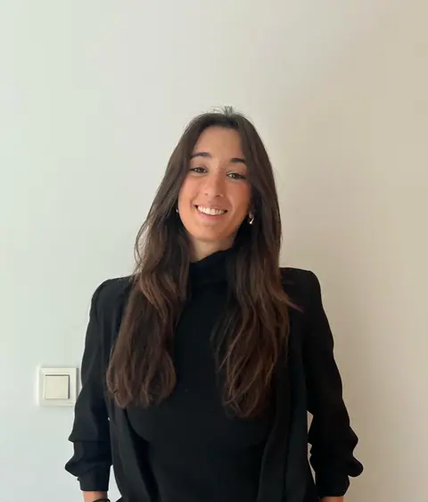
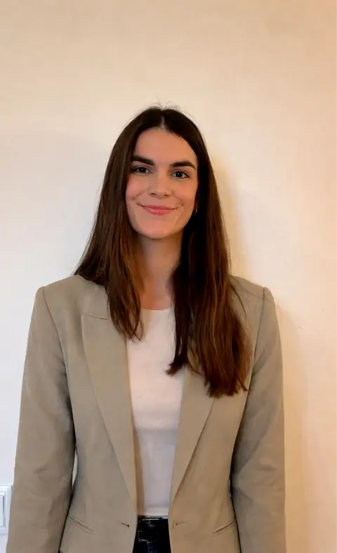
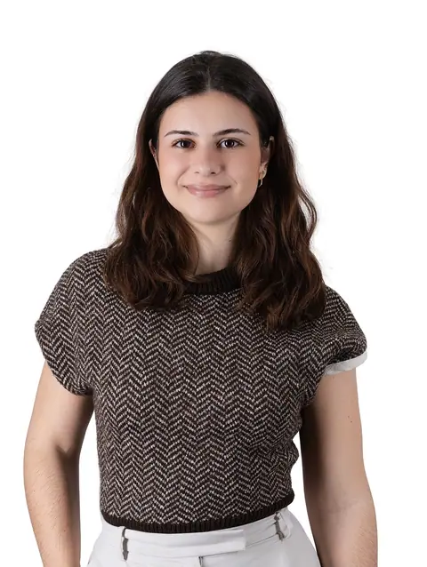
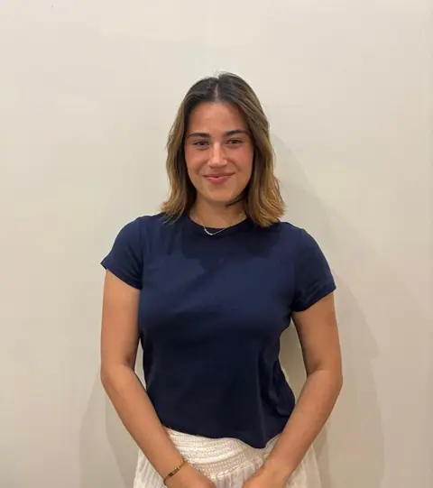

Leire Godoy
Trauma y apego · IFS · EMDR
Psicóloga general sanitaria (UAM, máster en la UAX). Formada en neuropsicología, EMDR, IFS y AEDP.
Muestra preparada por OI Studio para Leire Godoy Psicología, con los textos y fotos de su web actual. Sin compromiso.
Psicólogas en Donostia y online, especializadas en trauma, apego, ansiedad, pareja y familia. Sesiones de 50 minutos, a tu ritmo.
5,0Quizá tus emociones no están intentando destruirte, sino contarte algo que llevas demasiado tiempo sosteniendo.
Te acompañamos a comprender el origen de tu malestar, liberar emociones que llevan demasiado tiempo encerradas y sanar heridas profundas.
No hace falta tenerlo todo claro. Elige lo que más se parezca a lo que vives y te contamos cómo podemos acompañarte.
Un lugar donde poder parar, entender lo que te está pasando y empezar a ordenarlo sin sentirte juzgado/a. No nos quedamos solo en aliviar lo que sientes, sino en comprender qué hay detrás y cómo transformarlo.
Escribirnos por WhatsAppPsicólogas sanitarias con formación en trauma, apego, EMDR, IFS y terapia familiar y de pareja. Trabajamos desde una mirada integradora: la terapia se adapta a ti, no al revés.

Trauma y apego · IFS · EMDR
Psicóloga general sanitaria (UAM, máster en la UAX). Formada en neuropsicología, EMDR, IFS y AEDP.

Familia y pareja
Psicóloga general sanitaria (UAX), especializada en terapia familiar y de pareja. Acompaña también a menores y familias.

Trauma, apego · EMDR · IFS
Formada en la UCM, máster sanitario (UAX) y en psicología jurídica y forense (CEU).

Ansiedad, depresión · niños y adolescentes
Psicóloga clínica. Atiende a niños, adolescentes y adultos, en castellano y en inglés.
La tarifa incluye la preparación de cada sesión, el seguimiento de tu proceso, la supervisión del caso cuando hace falta y el contacto entre sesiones.
Escríbenos por WhatsApp si te resulta más fácil que llamar. Te respondemos y buscamos el mejor momento para empezar.